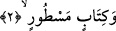

“Andolsun Tûr’a.” Mûsâ (a.s.)’ın vahiy aldığı Sîna Dağı’na.
Tur kelimesinin başındaki vâv kasem içindir. “Tûr” Süryânice’de “dağ” demektir.
Bazıları bu kelimenin fasîh Arapça bir kelime olduğunu söylemişlerdir. Bu nedenle İbn
Abbas da “Tûr”un bitki biten her dağa verilen bir isim olduğu görüşündedir.
Şâir beytinde şöyle diyor:
Dağa bazı kargalar uğrasa,
O dağ artık üzerinde hiçbir yaprak bitirmez.
Demişlerdir ki, burada “tûr”dan maksad, mutlak anlamda yerin direkleri olan
dağlardır.
Bu dağın, pek çok pınarı ve faydası bulunan bir dağ olduğu, başka bir görüşe göre de
dünyanın etrafını kuşatan bir dağ olduğu bildirilmekle beraber en meşhur görüşe göre
ise “Tûr”un, “Tûr-i Sînîn” adlı, Medyen’de bulunan ve üzerinde Mûsâ (a.s)’ın hitâb-ı
ilâhiyeye mazhar olduğu “Zebîr” diye tesmiye olunan mübârek bir dağ olduğudur. Bu
nedenle Allah ona kasemde bulunmuştur. Çünkü bu dağ, Allah dostlarının hitâb-ı
ilâhiyeye mazhar olacakları vakit geldikleri yerdir. Pek çok evliyâ buraya gelmiş ve
oraya geldikleri anda mânevî ahvâl kendilerini kuşatmıştır.
Harîdetu’l-acâib’de müellif bu dağın Şam ve Medyen arasında bulunan bir dağ
olduğunu söyler ve bu görüşünü de şu sözleriyle destekler: Burası Eyle kasabasının
yakınında bulunan, üzerinde Mûsâ (a.s.)’ın vahye muhatab olduğu bir dağdır. Mûsâ
(a.s.), Allah’a münâcât için buraya geldiğinde onun üzerine bir bulut kümesi iner ve o,
bu bulut kümesinin içine girerek celâl ve ikram sâhibi Allah ile konuşurdu. İşte bu dağ,
Mûsâ (a.s) Allah Teâlâ’dan hitap alırken un ufak olan, Mûsâ (a.s)’ın da baygın olarak
yere yığıldığı dağdır. Bu dağın taşları ne zaman kırılırsa içinden dikenli bir ağaç çıktığı
için yahûdiler, “Mûsâ dikeni” de denilen bu dikenli ağaca hürmet ederler. Bu anlamı
itibarıyla bu ağaca “Yahudi ağacı” adı da verilmiştir.
Kâmus’ta geçtiği üzere “Avsec” dikenli bir ağaç cinsi olup müfredi “Avsece” olarak
gelmektedir.
2. Satır satır yazılmış Kitab’a;
“Satır satır” muntazam bir sûrette “yazılmış Kitab’a” andolsun! “Satır”, yazılmış
olan harflerin tertibidir ki bundan murad; Kur’ân-ı Kerîm veya Tûr dağına münasip
olması açısından Mûsâ (a.s.)’ın levhalarıdır. Diğer görüşlere göre de Levh-i Mahfûz
veya Levh-i Mahfuz’da yazılı bulunan “Rahmetim gazabımı geçmiştir” sözü yahut
“Kim kelime-i tevhîdi söyleyerek bana gelirse onu cennete koyarım” ifâdesi yahut da